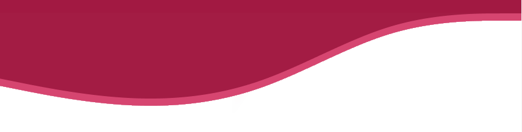
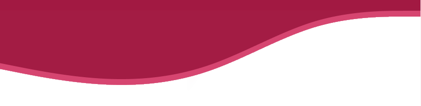
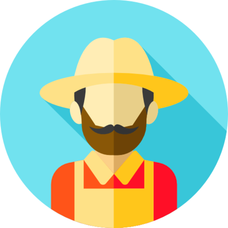

Ods 8.3
Promover políticas orientadas para o desenvolvimento que apoiem as atividades produtivas, geração de emprego decente, empreendedorismo, criatividade e inovação, e incentivar a formalização e o crescimento das micro, pequenas e médias empresas, inclusive por meio do acesso a serviços financeiros
Mais informações
Ods 8.4
Melhorar progressivamente, até 2030, a eficiência dos recursos globais no consumo e na produção, e empenhar-se para dissociar o crescimento econômico da degradação ambiental, de acordo com o Plano Decenal de Programas sobre Produção e Consumo Sustentáveis, com os países desenvolvidos assumindo a liderança
Mais informações
.png)
Ods 8.5
Até 2030, alcançar o emprego pleno e produtivo e trabalho decente para todas as mulheres e homens, inclusive para os jovens e as pessoas com deficiência, e remuneração igual para trabalho de igual valor
Mais informações
Saiba mais
Descubra mais sobre as diferentes ODS's. Os Objetivos de Desenvolvimento Sustentável que são um apelo global à ação para acabar com a pobreza, proteger o meio ambiente e o clima e garantir que as pessoas, em todos os lugares, possam desfrutar de paz e de prosperidade.
ODS 9 ODS 10 ODS 11.png)